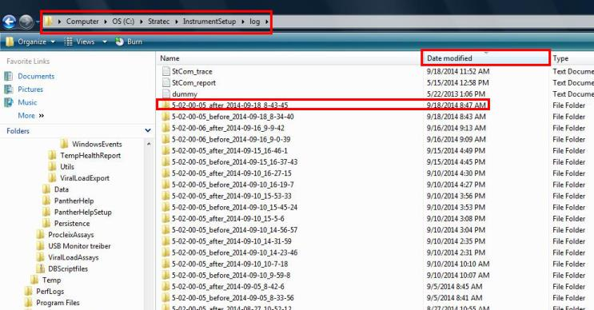
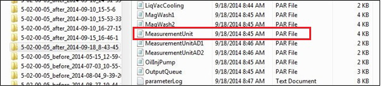
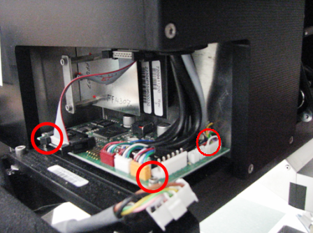
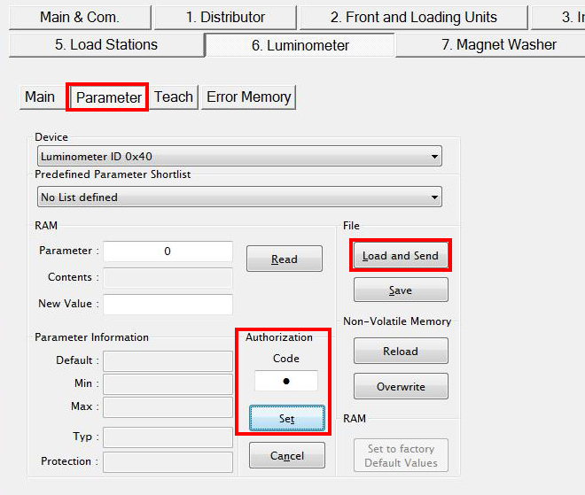
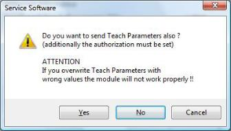
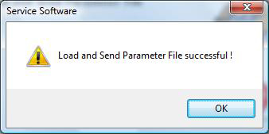
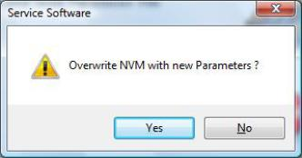

Parts and Materials Required
- Proper PPE
- Allen wrench, 2.5 mm
- Customer Specific PQ
 Performance Qualification Kit
Performance Qualification Kit - SysCheck Kit
- USB Flash Drive
- LUMO, PCB MAIN
Time Required
- 8 hours (includes running a Performance Qualification procedure)
Backup Firmware Parameters
If the parameters cannot be obtained or are not available (for example, if the PC has been reimaged), then skip this section and start with the Removal Procedure.
- Put on proper PPE.
- Log in to the FSE Shield.
- Open Windows Explorer
- Navigate to the C:/Stratec/InstrumentSetup/log directory on the Panther PC.
Note:
For SW v5.3, navigate to measuring unit.par.
For SW v6.x and higher, navigate to C:\Stratec\Logs\xxx(most current)\Panther_After\2094_00_01_MUC_0x40_0x00.par.
For example: xxx(most current) will display as “IS_V07.02.07.01_Date_2022-11-22_Time_11-31”
Images below are for reference only. - Click the Date Modified column header to sort all folders into chronological order, and open the _after_ folder with the most recent Date Modified time stamp.

- Copy the MeasurementUnit.par file onto a USB flash drive.
- MeasurementUnit.par (up to sw5.x)
OR - 2094_00_01_MUC_0x40_0x00.par (sw6.x and higher)

- MeasurementUnit.par (up to sw5.x)
Removal Procedure
- Put on proper PPE.
- Shut down the Panther System.
- Open the Service Drawer. Slide the drawer out until the PCB on the side of the luminometer is accessible.
- Disconnect the flex cable and all sensors (3), motors (2), and OLV (1) cable connectors from the Luminometer PCB.
- Using a 2.5 mm Allen wrench, remove the three 2.5 mm screws that secure the Luminometer PCB.

- Lift the PCB up and remove it from the module.

Replacement Procedure
- Place the new Luminometer PCB on top of the standoffs. Line up the back left corner hole with the back left corner standoff threaded stud.
- Using a 2.5 mm Allen wrench, install the 3 screws that secure the Luminometer PCB.

Note—There is no screw or nut that attaches to the rear left standoff. - Connect the flex cable and all sensor (3), motor (2), and OLV (1) cable connectors into the Luminometer PCB. Make sure flex cable retainers are snapped in place.
- Close the Service Drawer.
- Power on the Panther System and PC and log into the FSE Shield.
- If the parameters were successfully backed up to a USB in the Backup Firmware Parameters section, continue with Transfer Firmware Parameters section below.
- If the parameters were NOT backed up to USB, the new PCB will require re-teaching of the Shutter Drive.
- Perform Luminometer MTU Tube Position Teaching.
- Do not perform Syscheck or the PQ as listed in the Verification section of Luminometer MTU Multi-tube unit—Container used to process tests in the instrument. An MTU contains five separate reaction tubes. The MTU is moved through the instrument by the linear distributor and includes five tiplets for pipettiing to be used in the mag wash station. Tube Position Teaching. They are performed in the Alignment/Calibration and Verification sections in this procedure.
- Continue with the Alignment/Calibration section.
Transfer Firmware Parameters
- Insert the USB drive that has the saved MeasurementUnit.par file.
- Start Service Software. From the 6. Luminometer tab, select Parameter.
- Ensure the Device drop-down menu has Luminometer ID 0x40 selected.
- In the Authorization Code field, clear the current contents and enter 1. Click the Set button. (The text is masked with a dot so the numeric value will not appear.)
- Click the Load and Send button.

- Browse to the Flash Drive and select the MeasurementUnit.par file.
- You will be prompted with a warning to send Teach Parameters. Click Yes.

- The system will now begin uploading the module specific parameters. Click OK.

- You will then be prompted to overwrite NVM (Non-Volatile Memory). Click Yes.

- Shutdown the Panther System and PC when finished.
- Power on the Panther System and PC.
Alignment / Calibration / Verification
- Run Instrument Setup. This is performed to back-up the most current parameters for the Luminometer to the C:/Stratec/InstrumentSetup/log directory.
- Perform a Luminometer OLV calibration.
- Perform the Syscheck procedure.
- Perform the Flashcheck procedure.
 button at the top of the page to send feedback, comments, or change requests.
button at the top of the page to send feedback, comments, or change requests.